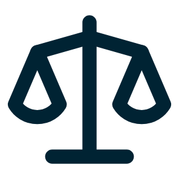
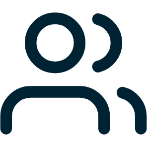
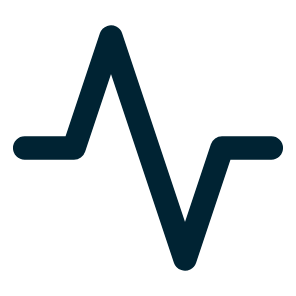

Het model
Per vakgebied apart getraind

Recht
Economie

Sociale
wetenschappen
Techniek
Geestes
wetenschappen

Gezondheid
RAG, toegang tot vakliteratuur
FUNDAMENT
250.000 datapunten
Didactiek en onderwijskunde
Getraind met de Universiteit Leiden en de Radboud Universiteit.